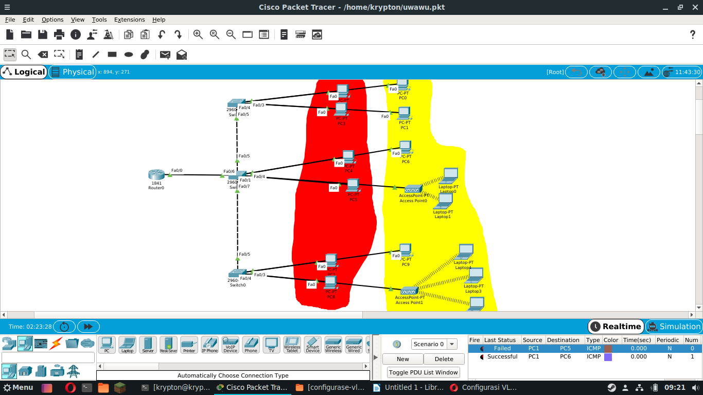
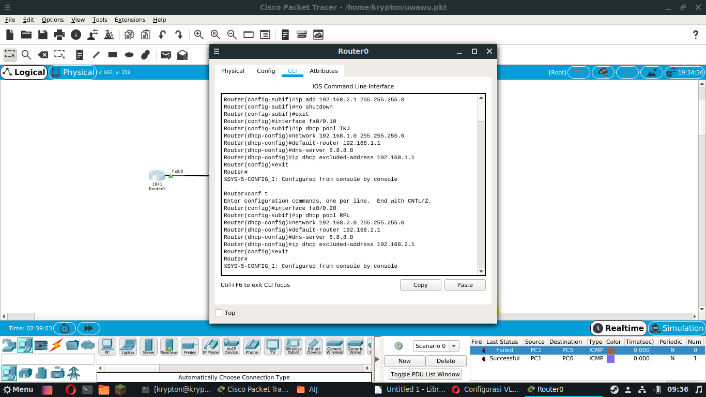
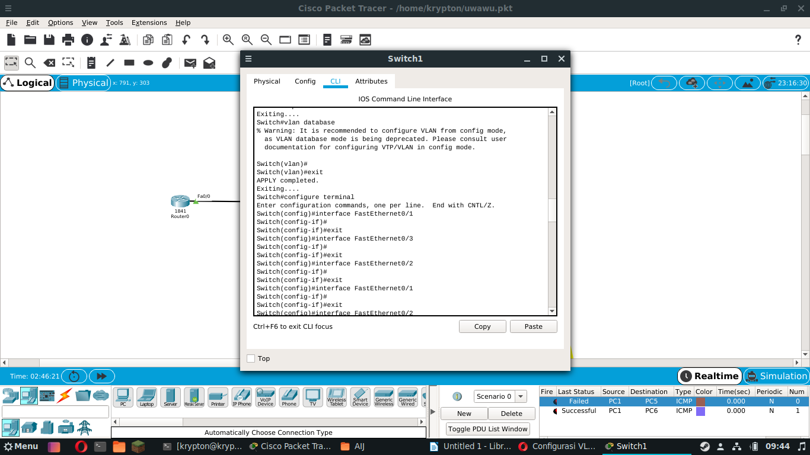
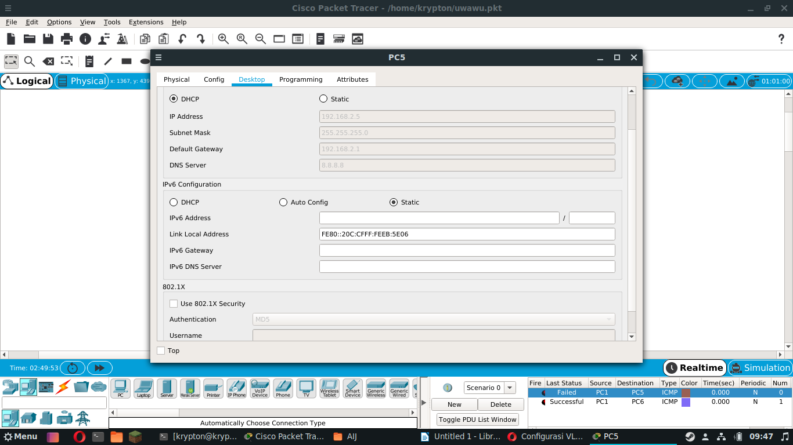
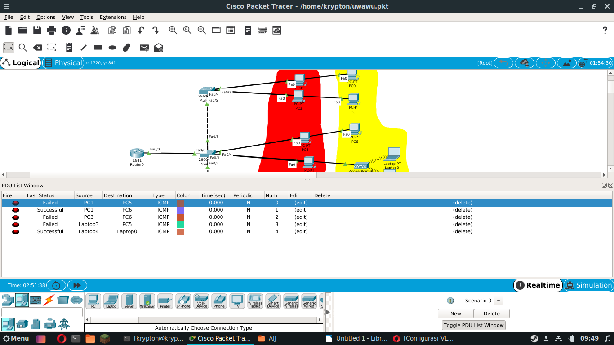

Configurasi Vlan #2

Nama
: Dhimas Bagus Prayoga
Kelas : XI TKJ - 1
No. Absen : 09
Mapel : Administrasi Infrastruktur Jaringan (AIJ)
Nama
: Dhimas Bagus Prayoga
Kelas : XI TKJ - 1
No. Absen : 09
Mapel : Administrasi Infrastruktur Jaringan (AIJ)
A. Tujuan Pembelajaran
- Siswa dapat mengetahui cara menggunakan metode jaringan VLAN dan AP.
B. Alat dan Bahan
- Seperangkat komputer.
- Software Cisco Paket Tracer.
C. Langkah - Langkah
1. Buat bentuk topologi seperti di bawah ini

2. Selanjurnya kita settings ROUTER dengan CLI

Router>enable Router#vlan database Router(vlan)#vlan 10 Router(vlan)#vlan 20 Router(vlan)#vlan 30 Router(vlan)#exit
Router>enable Router#conf t Enter configuration commands, one per line. End with CNTL/Z. Router(config)#int fa0/0.10 Router(config-subif)#encapsulation dot1q 10 Router(config-subif)#ip add 192.168.1.1 255.255.255.0 Router(config-subif)#no shutdown Router(config-subif)#exit Router(config)#int fa0/0.20 Router(config-subif)#encapsulation dot1q 20 Router(config-subif)#ip add 192.168.2.1 255.255.255.0 Router(config-subif)#no shutdown Router(config-subif)#exit Router(config)#int fa0/0.30 Router(config-subif)#encapsulation dot1q 30 Router(config-subif)#ip add 192.168.3.1 255.255.255.0 Router(config-subif)#no shutdown Router(config-subif)#exit
Router#conf t Enter configuration commands, one per line. End with CNTL/Z. Router(config)#interface fa0/0.10 Router(config-subif)#ip dhcp pool TKJ Router(dhcp-config)#network 192.168.1.0 255.255.255.0 Router(dhcp-config)#default-router 192.168.1.1 Route(dhcp-config)#dns-server 8.8.8.8 Router(dhcp-config)#ip dhcp excluded-address 192.168.1.1 Router(config)#exit Router(config)#interface fa0/0.20 Router(config-subif)#ip dhcp pool RPL Router(dhcp-config)#network 192.168.2.0 255.255.255.0 Router(dhcp-config)#default-router 192.168.2.1 Route(dhcp-config)#dns-server 8.8.8.8 Router(dhcp-config)#ip dhcp excluded-address 192.168.2.1 Router(config)#exit Router(config)#interface fa0/0.30 Router(config-subif)#ip dhcp pool MM Router(dhcp-config)#network 192.168.3.0 255.255.255.0 Router(dhcp-config)#default-router 192.168.3.1 Route(dhcp-config)#dns-server 8.8.8.8 Router(dhcp-config)#ip dhcp excluded-address 192.168.3.1 Router(config)#exit
3. Dan settings juga Switch nya

Switch>en Switch#conf t Enter configuration commands, one per line. End with CNTL/Z. Switch(config)#vlan 10 Switch(config-vlan)#name TKJ Switch(config-vlan)#vlan 20 Switch(config-vlan)#name RPL Switch(config-vlan)#exit Switch(config-if)#end
Switch#conf t Enter configuration commands, one per line. End with CNTL/Z. Switch(config)#int fa0/1 Switch(config-if)#switchport mode access Switch(config-if)#switchport access vlan 10 Switch(config-if)#exit Switch(config-if)#int fa0/2 Switch(config-if)#switchport mode access Switch(config-if)#switchport access vlan 10 Switch(config-if)#exit Switch(config-if)#int fa0/7 Switch(config-if)#switchport mode access Switch(config-if)#switchport access vlan 10 Switch(config-if)#exit Switch(config-if)#int fa0/3 Switch(config-if)#switchport mode access Switch(config-if)#switchport access vlan 20 Switch(config-if)#exit Switch(config-if)#int fa0/4 Switch(config-if)#switchport mode access Switch(config-if)#switchport access vlan 20 Switch(config-if)#exit Switch(config-if)#int gig0/1 Switch(config-if)#switchport mode trunk Switch(config-if)#exit Switch(config)#end
4. Settings IP bisa menggunakan DHCP

5. Hasil dari percobaan simulasi PING

E. Kesimpulan
Saat settings di CLI harus teliti dan tidak sembarangan, ketelitian sangat di adu saat setting seperti ini